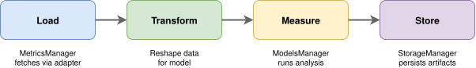
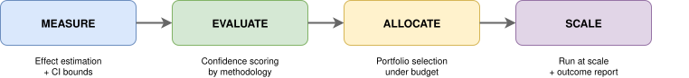

System
"What I cannot create, I do not understand."
A config-driven pipeline of independent, adapter-based components
communicating through versioned dict contracts. Each stage
is a separate Python package with its own repository, CI, and release
cycle — wired together by an orchestrator at runtime.
Pipeline Design — How is it wired?

Fan out per initiative, fan in at the decision boundary, fan back out for the winners.
The pipeline fans out measurements and evidence scoring in parallel — one call per initiative — then synchronizes at the allocation boundary where all results are needed to make a single portfolio decision. Selected initiatives fan back out for scaled deployment.

 Impact Engine — Orchestrator
Impact Engine — Orchestrator
The Impact Engine — Orchestrator owns the wiring: the component registry, the config loader, and the fan-out/fan-in execution model. Four independent packages, each with its own repository and CI pipeline, are connected into a single run by one YAML config file.
Extension Points — How does it extend?
Every stage follows the same internal pattern: external libraries sit behind thin adapters that self-register with a decorator. Adding a new causal model, decision rule, or scoring function means one new class, zero pipeline changes.

Each stage is a pipeline of pluggable adapters. Swap one without touching the rest.
# One interface, one registry, one decorator
@MODEL_REGISTRY.register_decorator("interrupted_time_series")
class InterruptedTimeSeries(ModelInterface):
def fit(self, data): ...
Components communicate through plain dict boundaries —
no cross-package type imports, no shared base classes. Each package is
independently deployable and testable. A YAML config selects which
components to wire together; changing the scenario means changing the
config, not the code.
Agentic Support — How is it built?

Conventions propagate from workspace root to each component. The AI reads the rules before touching a file.
A system that requires its builder to enforce every convention
creates a dependency. Each repo's CLAUDE.md is not
documentation — it is a runtime constraint on every AI-assisted
change: dependency graph, naming rules, interface contracts, all
read before a single file is touched.
 Agentic Support
Agentic Support
A shared library (utils-agentic-support), installed as a git submodule across all packages, supplies skills, subagents, and templates. Enforcement does not rely on humans remembering a style guide — it is embedded in the model's context, so the system can extend without its architect in the loop.
Further Reading
Pipeline Design
G. Hohpe & B. Woolf — Enterprise Integration Patterns: Designing, Building, and Deploying Messaging Solutions (2003)
M. Kleppmann — Designing Data-Intensive Applications (2017)
Extension Points
E. Gamma, R. Helm, R. Johnson & J. Vlissides — Design Patterns: Elements of Reusable Object-Oriented Software (1994)
M. Fowler — Patterns of Enterprise Application Architecture (2002)
Agentic Support
Anthropic — Building Effective Agents (Anthropic Blog, 2024)
S. Kwatra, H. Wimberly, J. Marker & E. Siegel — Eval-Driven System Design: From Prototype to Production (OpenAI Cookbook, 2025)